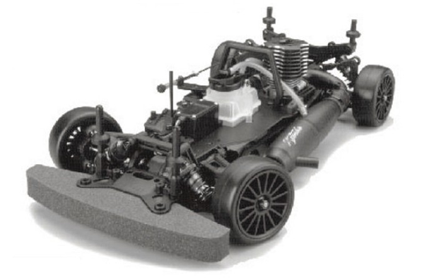

京商 V-One R

引用元画像：京商公式サイト
📋 基本情報
| メーカー | 京商（Kyosho） |
|---|---|
| 機種名 | V-One R（ブイワン アール） |
| シャーシ略称 | V-One R |
| 型番 | 31011 |
| 発売時期 | 2000年 |
| 価格 | 詳細不明 |
| 生産状況 | 生産終了 |
| カテゴリー | ラジコンカー（1/10スケール GP 4WD） |
| サブカテゴリー | GPツーリングカー（ベルトドライブ4WD、2スピードトランスミッション） |
| シリーズ | PureTen V-Oneシリーズ |
📏 シャーシスペック
| 全長 | 詳細不明 |
|---|---|
| 全幅 | 詳細不明 |
| 全高 | 詳細不明 |
| ホイールベース | 詳細不明 |
| トレッド | 詳細不明 |
| タイヤ幅/径 | 詳細不明 |
| フレーム | ダブルデッキアルミプレートシャーシ（高剛性設計） |
| 全備重量 | 詳細不明 |
⚙️ 駆動系
| 駆動方式 | ベルトドライブ4WD |
|---|---|
| デフギヤ | ギヤデフ（前後） ※オイルタイプ変更で調整可能 |
| ギヤ比 | 詳細不明 |
| ギヤピッチ | 詳細不明 |
| トランスミッション | 2スピードトランスミッション（レース対応） |
| スリッパークラッチ | 詳細不明 |
| エンジン | O.S. 12CV-R（標準装備） |
🔧 サスペンション
| 形式 | 4輪独立懸架 |
|---|---|
| サスアーム | 詳細不明 |
| ダンパー | コイルスプリング＋オイルダンパー×4本 |
| ステアリング | 詳細不明 |
💡 特徴
PureTen V-Oneシリーズの先駆け
- 2000年にリリースされたV-Oneシリーズの初期モデル
- ダブルデッキアルミプレートシャーシ採用で高剛性を実現
- PureTen（ピュアテン）GPツーリングカーの基礎を築いたモデル
2スピードトランスミッション搭載
- レース対応の2スピードトランスミッションを標準装備
- 加速と最高速のバランスを調整可能
- ギヤ比の選択で多様なコース設定に対応
高性能ドライブトレイン
- ベルトドライブ4WDで低重心設計と回転マス低減を実現
- ギヤデフ（前後）でオイルタイプ変更により調整可能
- ドッグボーンドライブシャフト採用
- フルベアリング仕様で滑らかな動き
O.S. 12CV-Rエンジン標準装備
- 高性能O.S. 12CV-Rエンジンを標準装備
- .12～.15クラスエンジンに対応
- シャーシミッドマウントで低重心化
レース対応設計
- 京商カップ（KYOSHO CUP）公式レース車両
- コイルスプリング＋オイルダンパーで路面追従性向上
- ダブルデッキシャーシで剛性と柔軟性を両立
🔧 ぽすとそに工房での修理実績
修理難易度
★★★★★（非常に困難）
情報の少なさとパーツ供給が極端に少ないため、修理が非常に困難です。
よくある故障・注意点
- オイルダンパーのオイル漏れ（O-リングシール要交換）
- ベルトの摩耗や伸び（定期的な張り調整と交換が必要）
- 2スピードトランスミッションの調整不良（シフト不良）
- ギヤデフの摩耗（ギヤ歯の欠けや摩耗に注意）
- ドライブシャフトの摩耗や曲がり（スチール製は摩耗しやすい）
- ボールジョイントの緩み（レース中の脱落に注意）
修理のポイント
- オイルダンパーは定期的にオイル漏れをチェックし、必要に応じてO-リング交換
- ダンパーシャフトに傷がある場合は即座に交換
- ベルトの張りは中央を押して約5mm沈む程度に調整
- ベルトプーリーの歯が丸くなっていないかチェック（摩耗していれば交換）
- ドライブシャフトはチタン製への換装を推奨（スチール製は摩耗・曲がりやすい）
- 2スピードトランスミッションは定期的にグリスアップとギヤ噛み合わせチェック
- ボールジョイントは毎レース後にチェックし、緩んでいれば交換
- エンジンマウントのネジはロックナット付きボルトで固定推奨
その他の特徴
- 2000年代初期のGPツーリングカーの標準的な設計
- パーツ供給が極端に少ないため、入手困難なパーツが多い
- V-One RRやV-ONE RRRへの進化の基礎となったモデル
- ダブルデッキシャーシ設計は後継モデルにも引き継がれた